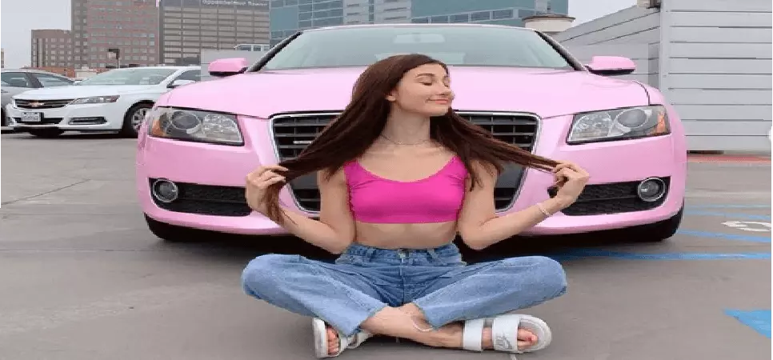
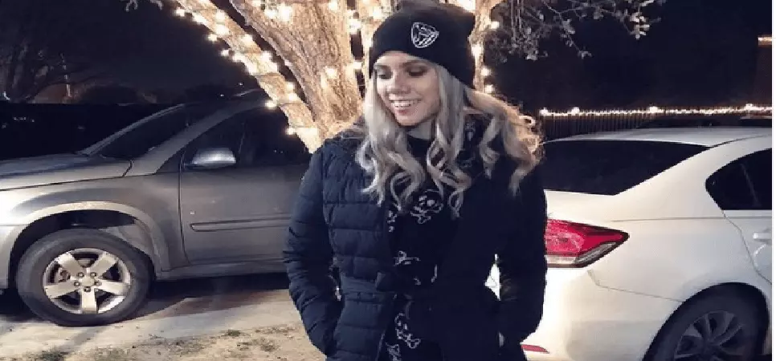
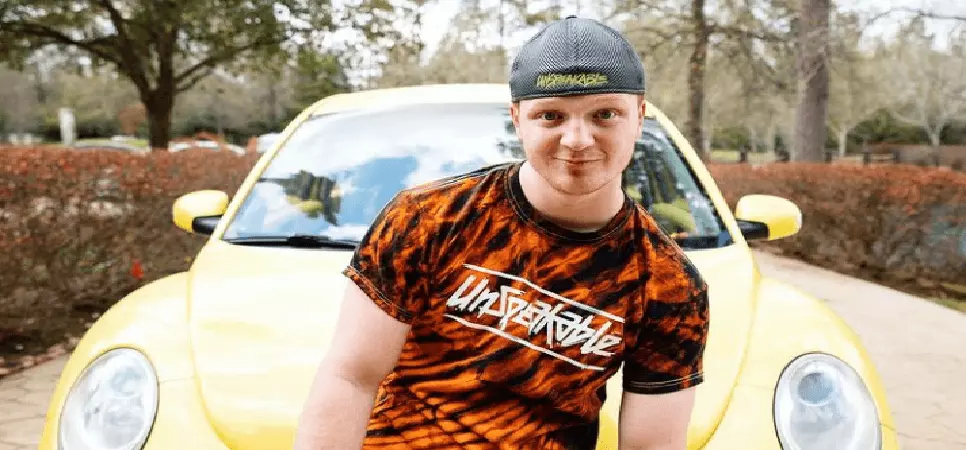

Top USA Vloggers (YouTubers) - Top USA YouTube Channels Of 2022
If a few lines of text are replaced by a 60 secs video, which one would you prefer? Of Course the video!
Vlogs can instantly connect with your audience on an emotional level and help to retain information longer than any other form of content. This is the reason why people tend to watch more videos than read blogs. Video blogging is the most preferred way of sharing information or experiences online with your viewers.
Due to the advent of the latest technologies, creating and uploading professional-quality videos is not as difficult as it used to be before. There are many beginners who have become experts on video-sharing platforms like YouTube and Instagram. Because of the availability of free and easy-to-use video editing software, there is hardly any need for professional video editors to produce cinematic content.
If you aspire to become a fully-fledged YouTube Vlogger at present, you can do that from the comfort of your own home with the help of your smartphone. You do not even need a lot of equipment to start your own YouTube channel. Your intention and effort are all that it takes to be successful on this platform.
Here are the top USA vloggers of 2022 which is sure to give you enough motivation and inspiration to become one of them.
1. Mr. Kate

Kate Albrecht, popularly known as Mr. Kate is a YouTube vlogger from Los Angeles, California. She has more than 4.01 million subscribers, which clearly reflects her success and fame. Her YouTube channel which was started in 2009 has crossed 394 million channel views. It’s indeed a huge achievement. DIY is a niche that reaches a larger audience than other career-specific categories. Who doesn’t like to learn simple life hacks? YouTubers who target niches that are in demand automatically gather a lot of views due to the high volume of search queries. Kate not only shares do-it-yourself content but also creates videos on life, style, and interior design. Collaboration with other YouTubers is also quite a popular trend on YouTube to increase subscriber count. Mr. Kate collaborates with popular YouTubers like LaurDIY and Jeffree Star to gain viewers. She also shares her personal moments with friends and family online and her pregnancy journey was also captured with her amazing vlogs. Moreover, she has a blog too with the same name which caters to fashion and interior design.
2. Maybaby
Meg DeAngelis, also known as MayBaby, is a famous YouTuber from Los Angeles, California. She started her YouTube career in 2008 and since then there has been no looking back. Her YouTube channel acquired more than 4.9 million subscribers with 368 million channel views as of May 2020. Initially, she used to create videos on cheerleading stunts and routine videos but after that, she started making videos on morning routines, room tours, and the very in-demand niche as we discussed earlier which is DIY content. Her success increased ten-fold when she starred in the YouTube Red Original movie “Dance Camp” and was also a member of the sketch comedy group “Just Like That”.
3. ThreadBanger
Rob and Cornie started their YouTube Channel in 2007 with a very different idea than other YouTubers. Through their “ThreadBanger….. Not Yo Mama’s DIY Channel, they share unusual and savage do-it-yourself videos. “Gelatin Flowers”, “Gingerbread shot glass challenge” and “Camping in the Backyard” are some of their popular crazy videos. If you are looking to have some fun then do visit their channel in your free time. I’m sure you will be shocked by their unconventional content. Rob and Cornie bagged the esteemed Webby award for the best web personality channel in 2017. They truly deserved it after all.
4. Maddie and Elijah

Maddie and Elijah YouTube channel was started in June 2016 by Maddie and Elijah Wireman. They gained over 1.83 million subscribers with more than 264 million channel views in a few years. The couple is quite consistent with their content hence they upload videos every Tuesday, Thursday, Friday, and Saturday. If you are interested in challenges and pranks, then this is probably the best channel for you.
5. Alissa Violet

Alissa is a multi-talented lady. She is a YouTuber, model, and actress. She began her YouTube journey in February 2015. Her channel became quite a sensation with over 237 million channel views and more than 3.88 million YouTube subscribers. She creates videos on travel diaries, funny content, and vlogs. She has been very successful in her modeling career and has modeled for brands like Converse and boohoo. She also got a chance to play a part in the movie “The Deleted” in 2016. Next year, Alissa set her foot in the music industry with the release of her song “It’s Every night Sis”.
6. Unspeakable
Nathan is a young YouTuber from Houston, Texas who started his YouTube career in 2012. But initially, he began with his gaming channel called “UnspeakableGaming” where he played and created gaming videos on Minecraft and similar other games. It’s quite evident that he has always been crazy for games and this is the reason why he became famous for his gaming skills. After the initial success of four years, he started another YouTube channel “Unspeakable”. This channel became a huge hit with more than 2.2 billion channel views and more than 6.6 million subscribers. Here Nathan creates videos on driving crazy cars, pranking friends, and crazy challenges.
7. Brooklyn and Bailey

Brooklyn McKnight and Bailey McKnight are YouTubers from Allen, Texas. The cutest thing about them is that both are identical twins. Their YouTube journey began in 2010 and they gathered a lot of subscribers in a short time. More than 1.2 billion channel views are of course not a joke and the huge fan following is just because people love to watch their cute videos which include family vlogs, fashion, beauty, crafts. Their YouTubing skill probably comes from their genes. They are daughters of Mindy McKnight, a successful YouTuber who started the channel “Cute Girls Hairstyles” which has over 5.6 million subscribers.
All the top USA vloggers mentioned above never reached their goals by fluke. It takes effort, creativity, and networking skills to be in the position where you desire to be. It takes time to build a good rapport with your audience so that they keep coming back to watch more of your videos. Interact with them on a regular basis and be consistent with their efforts.
So, which one of the YouTubers is your favorite? Feel free to share.